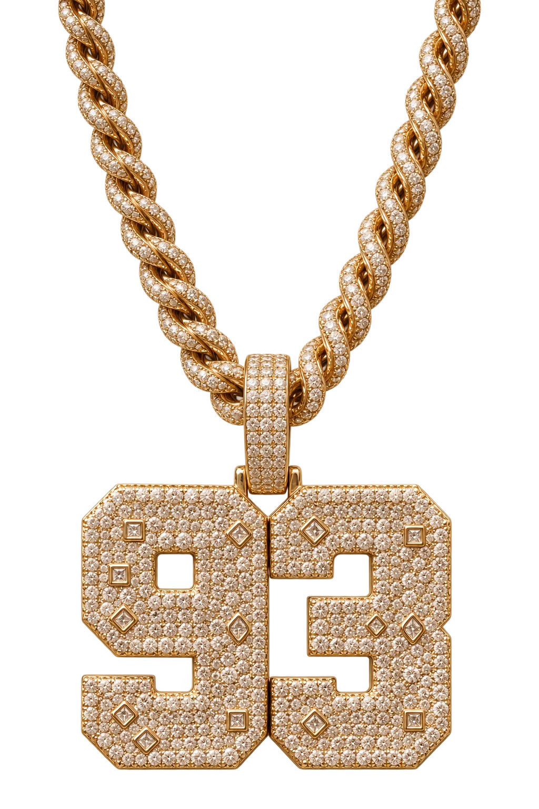
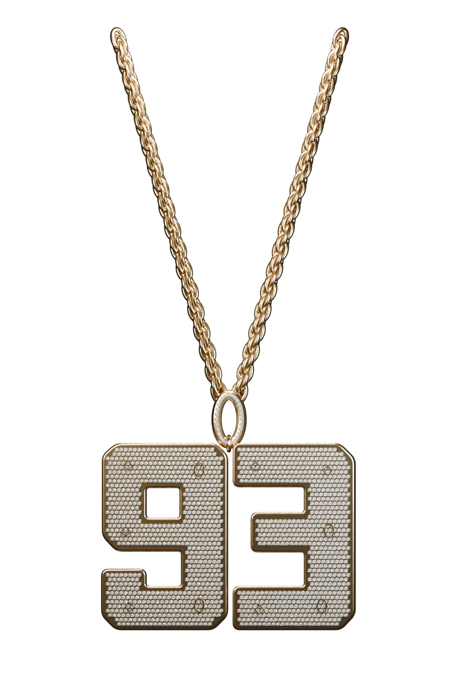
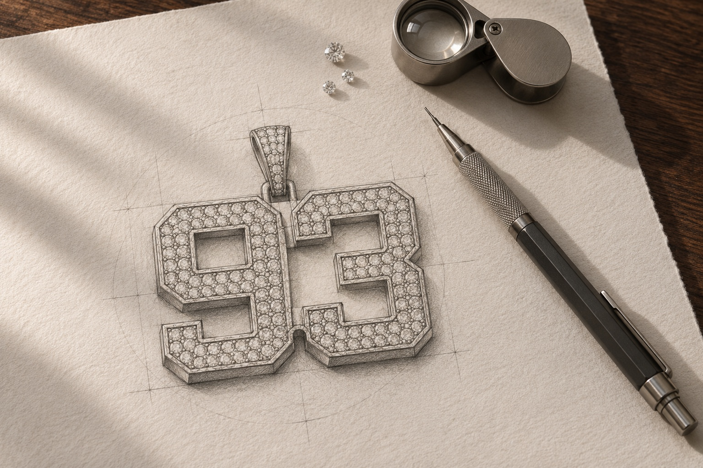
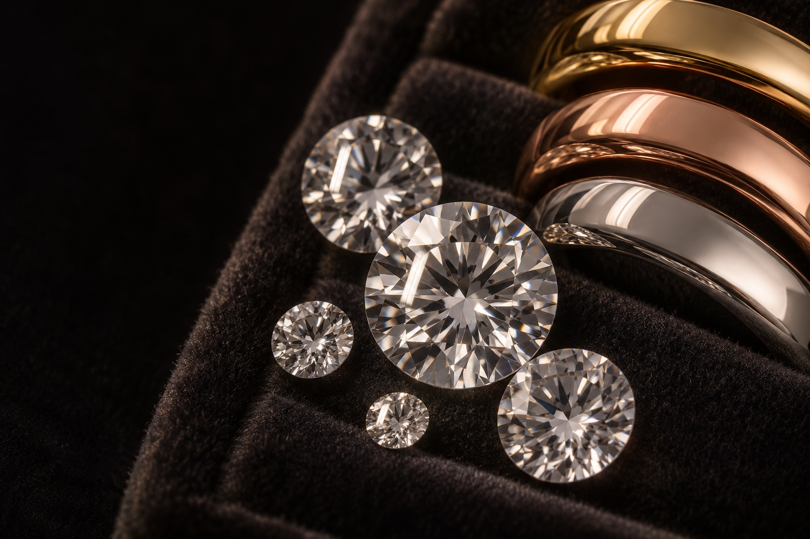

Une origine, des initiales, une envie. Partagez ce qui compte pour vous, quelques références et le budget que vous imaginez.

On dessine des bijoux.
On façonne du caractère.
Vous leur donnez du sens.
À leur image.
Sous tous
les angles.
Le dessin devient volume.
La lumière révèle le relief.
Une pièce, sous tous les angles.
Faites défiler pour révéler les détails.

Champagne
Interprétation 3D d’après la photographie.Finitions illustratives · Chargement de la pièce
D’abord une idée.
Puis la vôtre.
Votre point de départ peut tenir en un mot.
Le projet se précise au fil de l’échange.

Étude illustrative · Le dessinLe dessin, les volumes, le métal et les pierres se choisissent ensemble, selon leur faisabilité et votre budget.
Les caractéristiques de la pièce, son budget et les modalités de réalisation sont définis avant de poursuivre.

Le caractère
de la matière.
Une couleur. Un éclat. Un contraste.
Le choix change toute la présence d’une pièce.
Chaud. Clair. Rosé.
Or, or rose, or blanc, argent 925 et finitions plaquées : des possibilités à explorer selon votre projet.
Métal massif et placage sont distincts. Composition et disponibilité à confirmer ensemble.
La lumière, autrement.
Diamant naturel ou de laboratoire, moissanite ou zircon : chaque option possède ses propres caractéristiques.
Nature, caractéristiques et disponibilité des pierres à préciser pour votre projet.
Parlons
de vous.
Une première idée. Quelques détails.
Préparez votre brief pour ouvrir la conversation.
Avant de commencer.
Et si mon idée n’est pas encore précise ?
Une inspiration, un symbole ou une photo peuvent servir de point de départ. Vous pouvez aussi expliquer simplement ce que vous aimeriez porter.
Peut-on adapter le projet à mon budget ?
Le budget fait partie de l’échange initial. Les choix de forme, de métal et de pierres sont à discuter selon les possibilités de votre projet.
Comment choisir les matières ?
Précisez le rendu que vous aimez et vos préférences. La nature du métal, sa finition et les caractéristiques des pierres doivent être définies pour votre pièce.